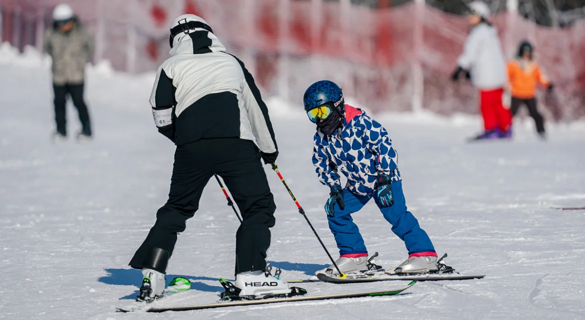
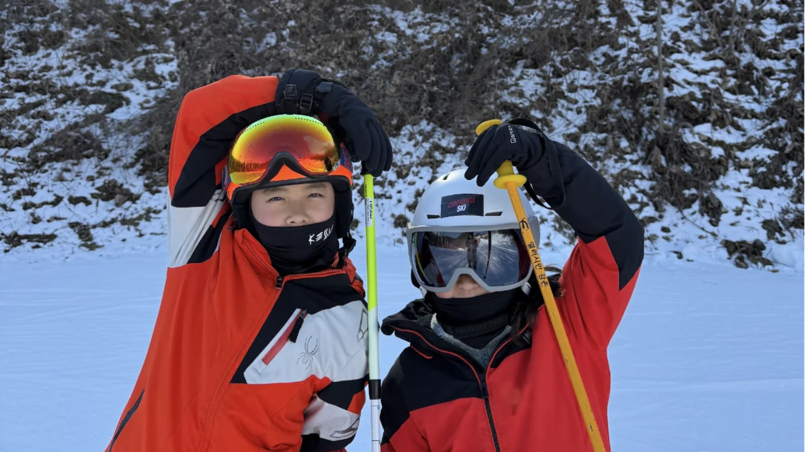

개인 레슨
아이 한 명의 움직임과 이해 속도에 맞춰 그날의 수업을 조정합니다.

한 가지 진도를 모두에게 적용하지 않습니다. 지금의 움직임을 보고, 아이에게 필요한 다음 연습을 함께 찾습니다.
아이의 성장이 먼저
주니어 스키 개인 레슨과 시즌 강습.
아이마다 다른 출발점과 속도를 살피며 자신감을 쌓아 갑니다.
수업 선택
아이 한 명의 움직임과 이해 속도에 맞춰 그날의 수업을 조정합니다.

겨울 동안 반복해서 만나며 지난 수업의 움직임을 다음 수업과 연결합니다.

수업 방식
정해진 커리큘럼보다 현재의 움직임에 맞는 연습을 정합니다.
지금 아이에게 필요한 동작에 집중합니다.
매 회차 촬영한 영상으로 수업을 되짚고 피드백을 전합니다.
자주 묻는 질문
주니어 스키 개인 레슨과 시즌 강습을 운영합니다.
정해진 진도를 일괄 적용하지 않고 아이의 현재 움직임과 속도에 맞춰 수업합니다.
매 회차 영상을 촬영하고 피드백을 진행합니다. 전달 방식은 상담 시 확인해 주세요.
시즌 운영 흐름 보기 ↗ 세부 일정과 참여 가능 여부는 상담 시 확인해 주세요.